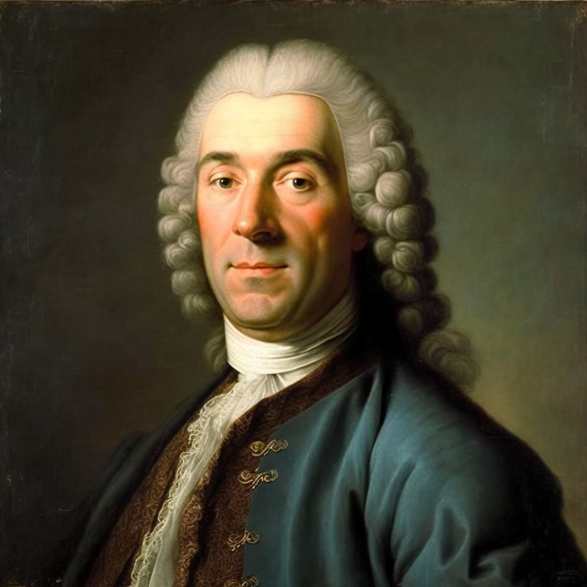

Доменико Андреа Трезиини — архитектор и инженер, итальянец, родившийся в Тессинском кантоне итальянской Швейцарии. С 1703 года работал в России, стал первым архитектором Санкт-Петербурга. Внёс значительный вклад в исторический процесс приобщения русской архитектуры к западноевропейским традициям и является одним из главных представителей архитектурного стиля «петровского барокко».
Работы: Аничков мост, Петропавловский собор, дом Трезини, перестройка Меншиковского дворца